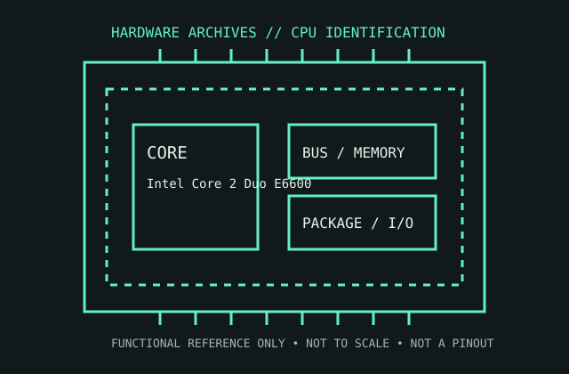

[ MODERN CORE AND RYZEN // IDENTIFIED COMPONENT ]
Intel Core 2 Duo E6600
The 2.40 GHz Conroe E6600 is a 65 nm dual-core LGA775 desktop processor with a shared 4 MB L2 cache.

MODEL IDENTIFICATION: Intel Core 2 Duo E6600. Read the full top marking/OPN, speed grade, package, and stepping from the physical part; do not transfer specifications across similarly named revisions.
Recorded specifications
| Cataloged part | Intel Core 2 Duo E6600 |
|---|---|
| Era / family | Intel Core microarchitecture / Core 2 Duo, Conroe, launched 2006; E6600 SKU. |
| Key specifications | 2 cores / 2 threads; 2.40 GHz; 1066 MT/s front-side bus; 4 MB shared L2; 65 nm; 65 W TDP; LGA775; supports DDR2/DDR3 only as determined by the motherboard chipset and memory slots. |
| Interface / fit | Requires LGA775 board whose chipset and BIOS list the E6600 and 1066 MT/s FSB. LGA775 electrical/VRM compatibility and board memory type vary; socket shape alone cannot confirm support. |
| Variants / identification | E6600 is distinct from later 45 nm Wolfdale E6x00 products and from the 2.40 GHz Core 2 Quad Q6600. Check Intel sSpec and stepping against the board CPU list. |
Compatibility and service notes
- Requires LGA775 board whose chipset and BIOS list the E6600 and 1066 MT/s FSB. LGA775 electrical/VRM compatibility and board memory type vary; socket shape alone cannot confirm support.
- E6600 is distinct from later 45 nm Wolfdale E6x00 products and from the 2.40 GHz Core 2 Quad Q6600. Check Intel sSpec and stepping against the board CPU list.
- Inspect LGA socket contacts before fitting; avoid contact with the socket pins. Record sSpec, stepping, board revision, BIOS, memory type, and cooler arrangement for reproducibility.
- Before installation, compare the exact CPU marking with the motherboard maker’s support list, board revision, BIOS minimum, package/socket, power requirements, and memory type. Do not force a package into a socket.
Service & archival record
Inspect LGA socket contacts before fitting; avoid contact with the socket pins. Record sSpec, stepping, board revision, BIOS, memory type, and cooler arrangement for reproducibility.
For a collection record, photograph both sides, retain the full model/OPN and date/lot codes, describe package and contact condition, and record the tested motherboard revision, firmware, cooling, memory, and measured operating conditions. Separate measured observations from published limits.
Sources & further reading
- Model-specific Core 2 Duo E6600 identification and specification cross-referenceModel-specific manufacturer, technical-document, or product-history reference; consult the exact device marking and board revision.
- Intel Core 2 Duo E6000 sequence data sheet — electrical and package detailsModel-specific manufacturer, technical-document, or product-history reference; consult the exact device marking and board revision.
- Intel Core microarchitecture / Core 2 product-history referenceModel-specific manufacturer, technical-document, or product-history reference; consult the exact device marking and board revision.
Third-party mirrors or historical document indexes may host manufacturer-authored manuals. Check document revision and exact model marking; board compatibility remains specific to its maker and firmware.